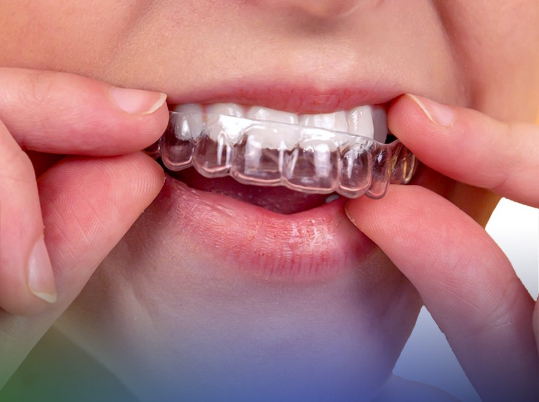
Alinhadores invisíveis
Placas transparentes New Aligner, removíveis na hora de comer e escovar. O plano inteiro é simulado em 3D antes de começar, então você vê o resultado final na primeira consulta.
Conhecer os alinhadores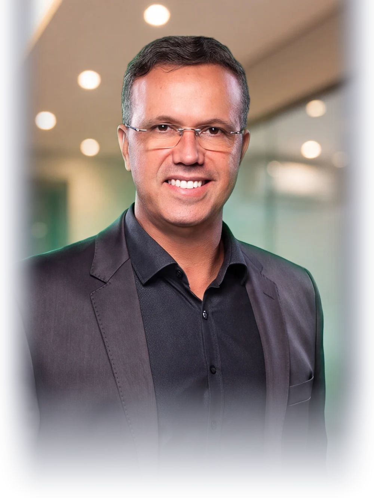
Planejamento por escaneamento 3D, tratamentos mais curtos, mais confortáveis e com menos idas ao consultório.
Tratamentos
Na avaliação inicial escaneamos seus dentes e mostramos, na tela, qual técnica resolve seu caso no menor tempo e como o resultado vai ficar.

Placas transparentes New Aligner, removíveis na hora de comer e escovar. O plano inteiro é simulado em 3D antes de começar, então você vê o resultado final na primeira consulta.
Conhecer os alinhadores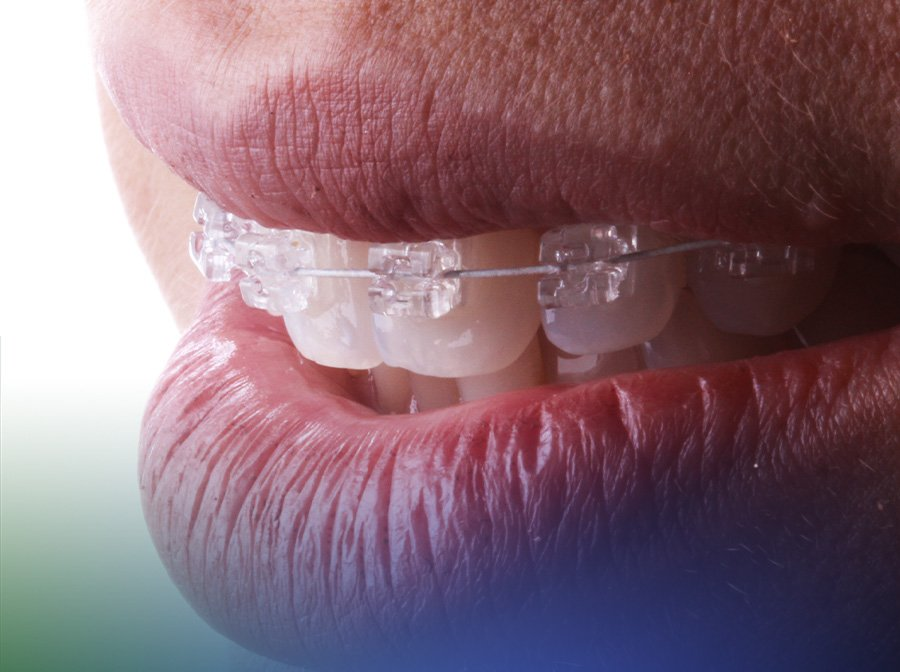
O New Evolution Pro é 100% estético e dispensa as borrachinhas que escurecem e prendem placa bacteriana. Menos atrito significa menos dor e consultas mais espaçadas.
Conhecer os bráquetes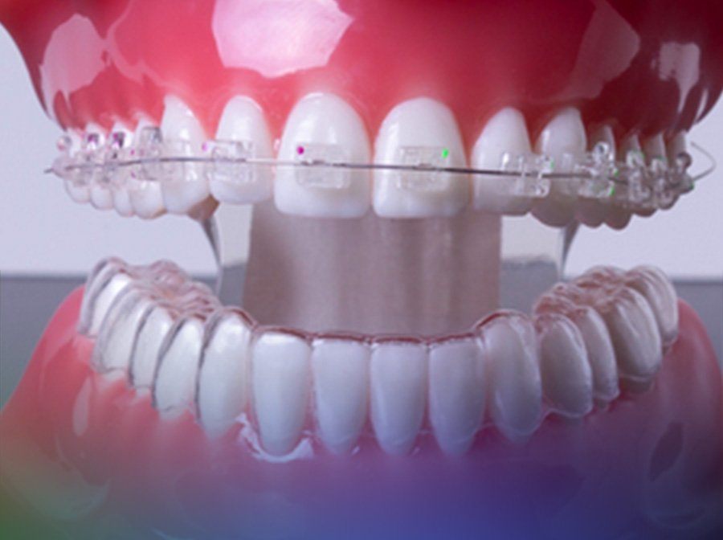
Bráquete ou alinhador? Os dois. Começamos com os autoligáveis, que resolvem os movimentos mais difíceis, e finalizamos com alinhadores. Técnica que o Dr. Claudio desenvolveu há mais de uma década.
Entender o TOHiLâminas finíssimas de porcelana que corrigem formato, cor e pequenos desalinhamentos. Ideais para quem já terminou a ortodontia e quer refinar o resultado.
Ver como funciona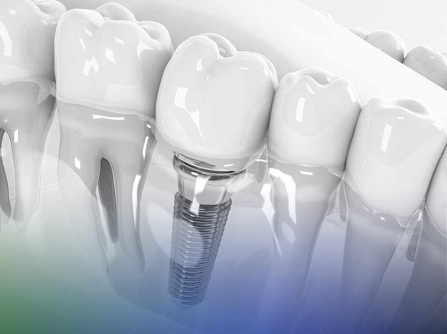
Reposição de dentes perdidos com técnicas modernas de carga imediata, para você voltar a mastigar e sorrir sem esperar meses pela cicatrização.
Conhecer os implantes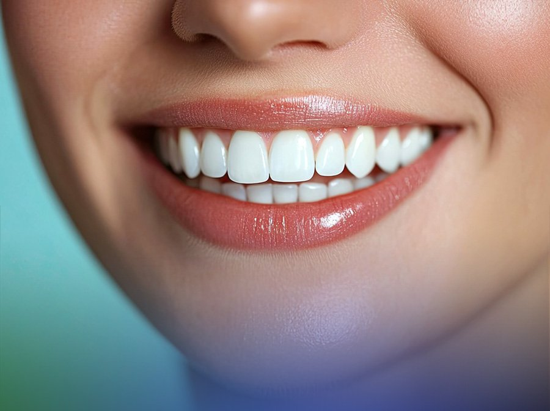
Clareamento supervisionado, check-up digital e aparelhos intraorais para ronco e apneia do sono, tratamentos que mudam autoestima e qualidade de vida.
Ver todos os serviçosResultados reais
Casos tratados pelo Dr. Claudio Figueiredo com ortodontia autoligável, em média 14 meses e sem nenhuma extração dentária.
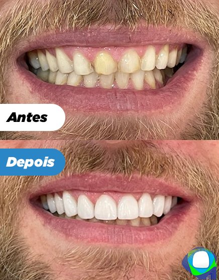
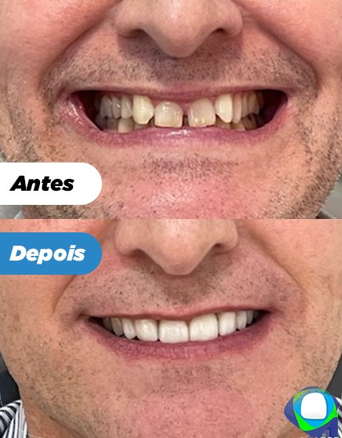
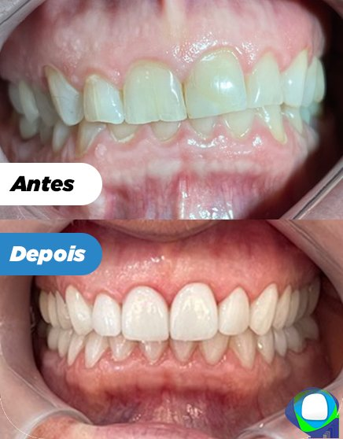
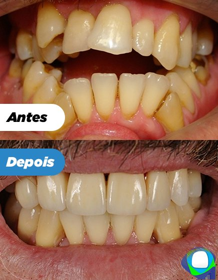
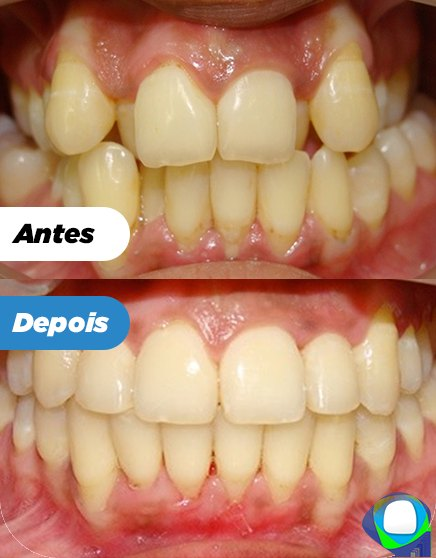

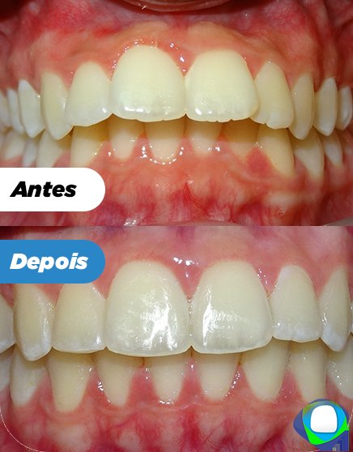
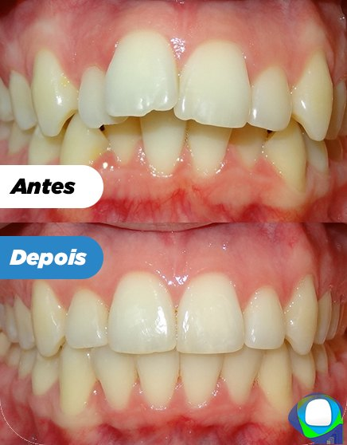
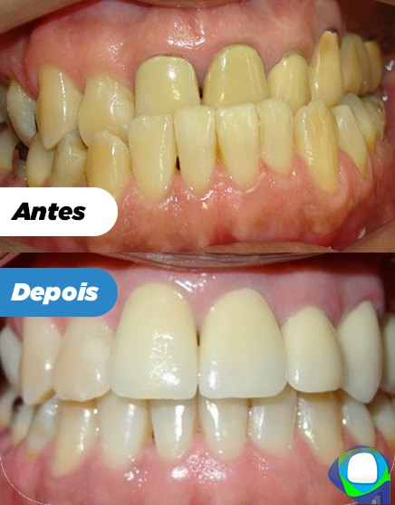
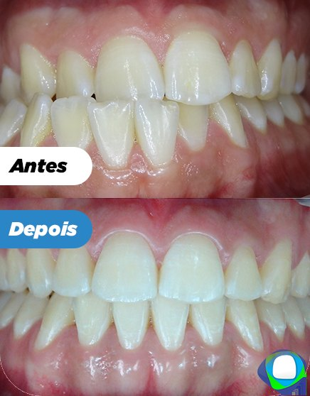
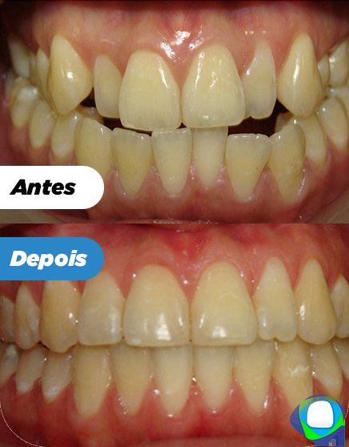
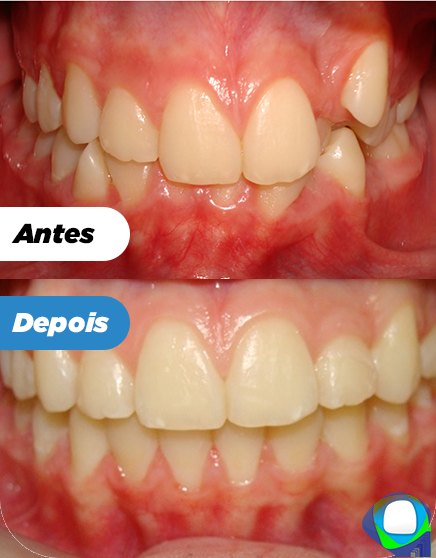
Imagens de pacientes reais da Ortoligável, publicadas com autorização. Resultados variam conforme o caso clínico, a resposta biológica de cada paciente e a adesão ao tratamento. As fotos não representam garantia de resultado.

Quem conduz seu tratamento
Autor de três livros, designer dos bráquetes New Evolution Pro e CEO dos alinhadores New Aligner. Ministra cursos no Brasil e no exterior, e atende pessoalmente na Ortoligável.
Trajetória
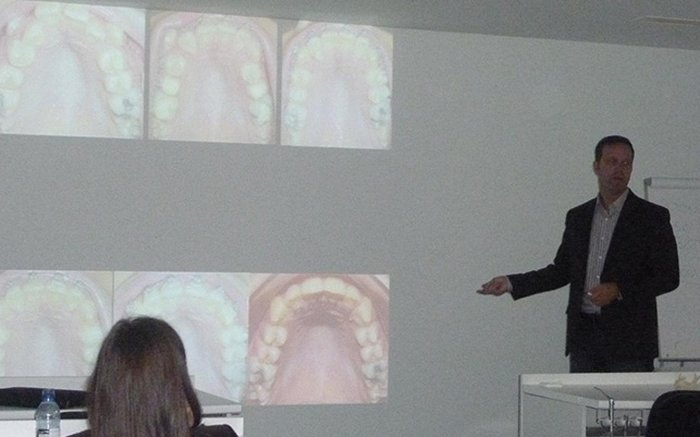
Entre os primeiros no Brasil a levar a filosofia autoligável para a rotina do consultório.
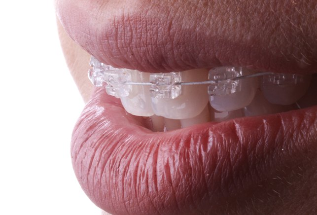
Primeira geração dos bráquetes estéticos autoligáveis desenhados pelo Dr. Claudio.
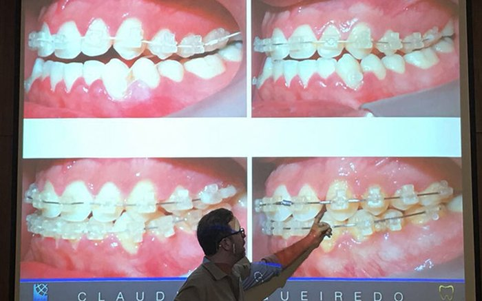
Centro Avançado em Sistema Autoligável e Alinhadores, dedicado à formação de ortodontistas.
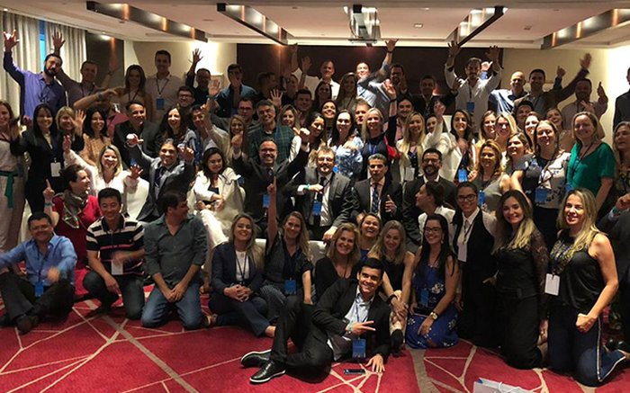
Palestrante principal na Alemanha, Portugal, Estados Unidos, Dubai e África do Sul.

Lançamento da linha própria de alinhadores invisíveis, hoje usada na Ortoligável.
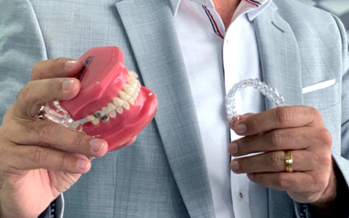
Técnica que combina bráquetes autoligáveis e alinhadores, trazida ao país pelo Dr. Claudio.
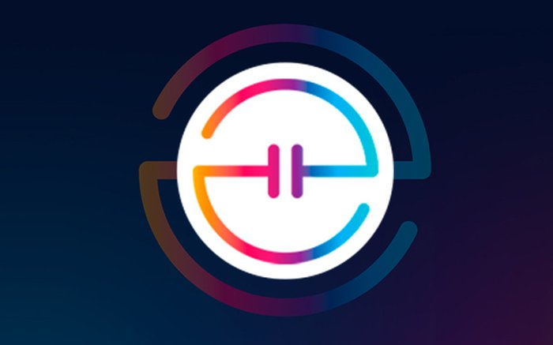
A versão mais avançada dos bráquetes estéticos, usada hoje nos tratamentos da clínica.
A clínica
Nossos tratamentos são pensados para causar o mínimo impacto estético possível, a ponto de quase ninguém notar que você está em tratamento. E são planejados com softwares que preveem cada movimento antes dele acontecer.
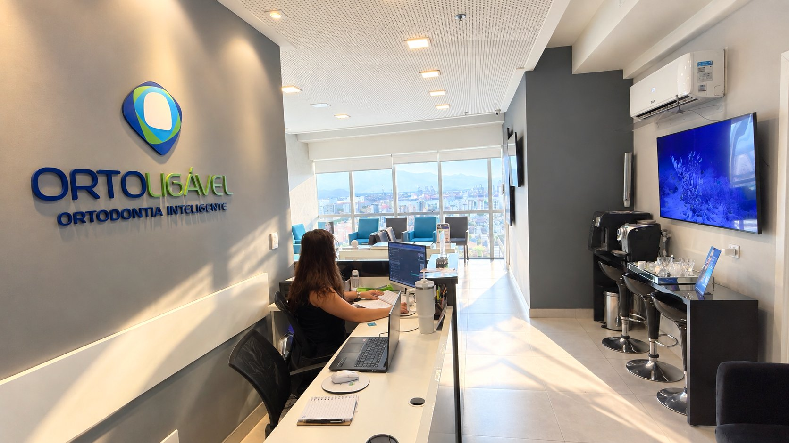
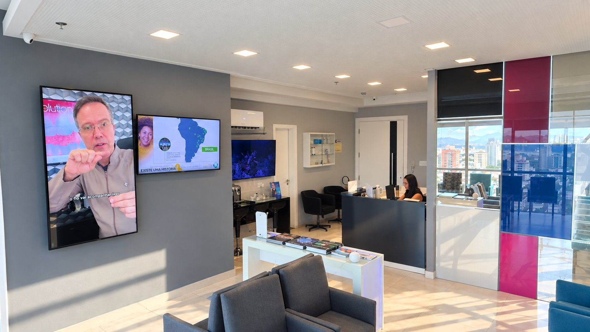
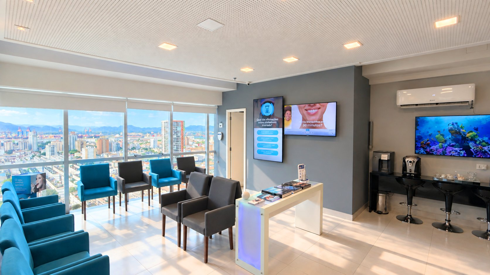
Unidade
A primeira avaliação inclui escaneamento e plano de tratamento apresentado na hora. Fale com a recepção e escolha o melhor horário.
30 anos de experiência e mais de 12 mil sorrisos transformados. O próximo pode ser o seu.